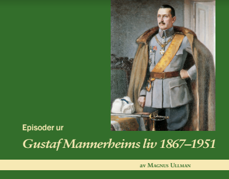
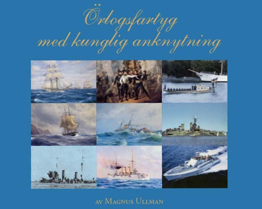
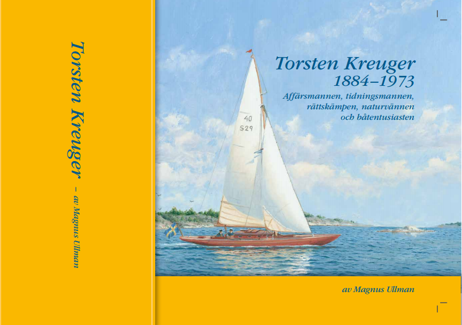
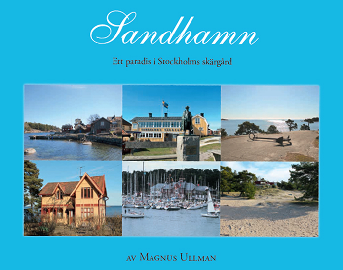

Episoder ur Gustav Mannerheims liv 1867-1951
2017 fyller Finland 100 år som fri och självständig nation. Jag tar därför tillfället i akt att lansera denna bok om dess störste medborgare, Gustaf Mannerheim, som innehåller fler än 30 olika dramatiska och delvis okänd episoder i hans händelserika liv. Boken bygger i stor utsträckning på mina två böcker om honom som jag gav ut 2000-2001, slutsålda sedan många år, men har uppdaterats, omredigerats och försetts med ett helt nytt kapitel, nämligen om den betydelsefulla tyska militära hjälpen sommaren 1944. Boken innehåller fler än 160 oljemålningar, fotografier, kartor mm, de allra flesta i färg. 274 sidor. En praktbok.
Pris 450 kr
Köp via PayPal:
Örlogsfartyg med kunglig anknytning
Från Gustaf IIIs Amphion till Carl XVI Gustafs T 46. Sammanlagt ett 20-tal örlogsfartyg och båtar med marin anknytning med koppling till Gustaf III, hertig Karl, Oscar I, Oscar II, Drottning Victoria, Gustaf V, prins Wilhelm, prins Bertil och Carl XVI Gustaf presenteras, ävensom kungliga statsbesök i Helsingfors med örlogsfartyg och Mannerheims statsbesök i Stockholm 1919 på en isbrytare! I boken skildras också Gustaf IIIs äventyrliga sjökrig mot Ryssland 1788-1790 där utgången hängde på ett hår och flera andra dramatiska örlogshistoriska händelser. En praktbok!
Pris 450 kr. Numrerad bibliofilupplaga med extra fin pärm, 750 kr.
Bromma igår och idag
.jpg)
Torsten Kreuger 1884-1973 - Affärsmännen, tidningsmannen, rättskämpen, naturvännen och båtentusiasten

Sandhamn - Ett paradis i Stockholms skärgård
Läs om Sandhamns historia, om Elias Sehlstedt, August Strindberg, Anders Zorn m fl kulturpersoner som var verksamma där. Läs om seglarprofiler i KSSS och andra profiler. Läs om Sandhamn idag, om bebyggelsen i hamnen, i byn, på Trouville och på andra ställen på ön. Boken är rikt illustrerad med fler än 100 bilder och oljemålningar i färg.